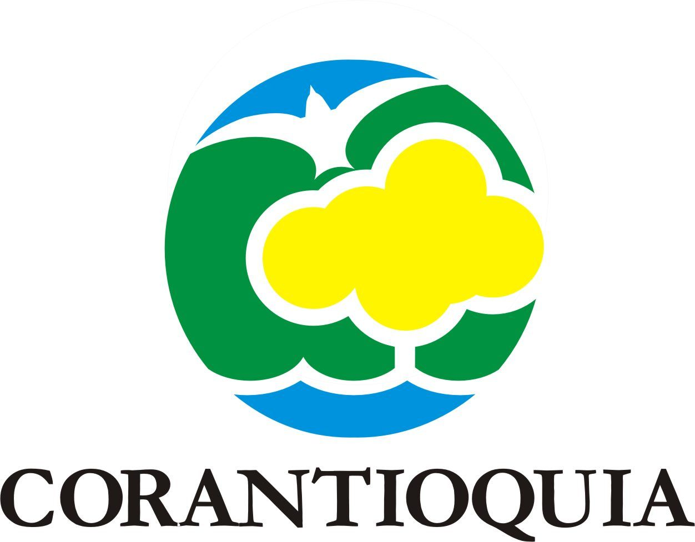

Siembra de árboles para el medio ambiente
La siembra de árboles es una de las actividades más importantes que podemos llevar a cabo para contribuir al cuidado del medio ambiente. Los árboles no solo mejoran la calidad del aire, sino que también ayudan a reducir el impacto del cambio climático y a proteger la biodiversidad. En este artículo, nos adentraremos en el mundo de la siembra de árboles y descubriremos cómo podemos hacer nuestra parte para preservar nuestro planeta. Desde los beneficios de plantar árboles hasta las mejores técnicas para sembrar, ¡no te pierdas esta guía completa sobre la siembra de árboles para el medio ambiente!
...
...
...
